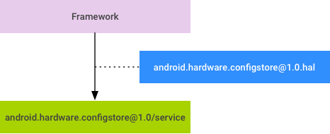

Android O splits the monolithic Android OS into generic (system.img) and hardware-specific (vendor.img and odm.img) partitions. As a result of this change, conditional compilation must be removed from modules installed to the system partition and such modules must now determine the configuration of the system at runtime (and behave differently depending on that configuration).
The ConfigStore HAL provides a set of APIs for accessing read-only
configuration items used to configure the Android framework. This page describes
the design of ConfigStore HAL (and why system properties were not used for this
purpose); other pages in this section detail the
HAL interface,
service
implementation, and
client-side usage,
all using surfaceflinger as an example. For help with ConfigStore
interface classes, see
Adding Interface
Classes & Items.
We considered using system properties but found several fundamental issues, including:
int or bool.
Other compound data types (array, struct, etc.) should be encoded/decoded by
the clients (e.g. "aaa,bbb,ccc" can be decoded as an array of three strings).
prop_area units with a fixed size of 128KB, all of which
is allocated to a process address space even if only a single system property in
it is being accessed. This can cause problems on 32-bit devices where address
space is precious.We attempted to overcome these limitations without sacrificing compatibility but continued to be concerned that system properties were not designed to support accessing read-only configuration items. Eventually we decided that system properties are better suited for sharing a few dynamically-updated items across all of Android in real time, and that a need existed for a new system dedicated to accessing read-only configuration items.
The basic design is simple:

Figure 1. ConfigStore HAL design
Configuration items currently referenced by the framework are included in a
versioned HIDL package (android.hardware.configstore@1.0). Vendors
and/or OEMs provide values to the configuration items by implementing interfaces
in this package, and the framework uses the interfaces when it needs to get a
value for a configuration item.
Build flags defined in the same interface are affected by same SELinux
policy. If one or more build flags should have different SELinux policies,
they must be separated to another interface. This can require
major uprev of android.hardware.configstore package as the
separated interfaces are no longer backwards-compatible.